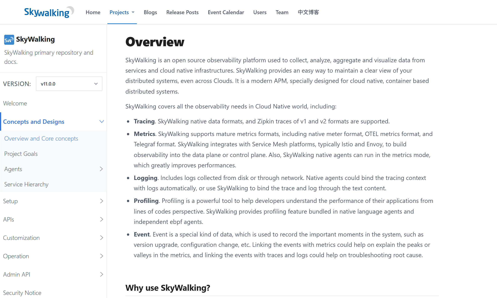
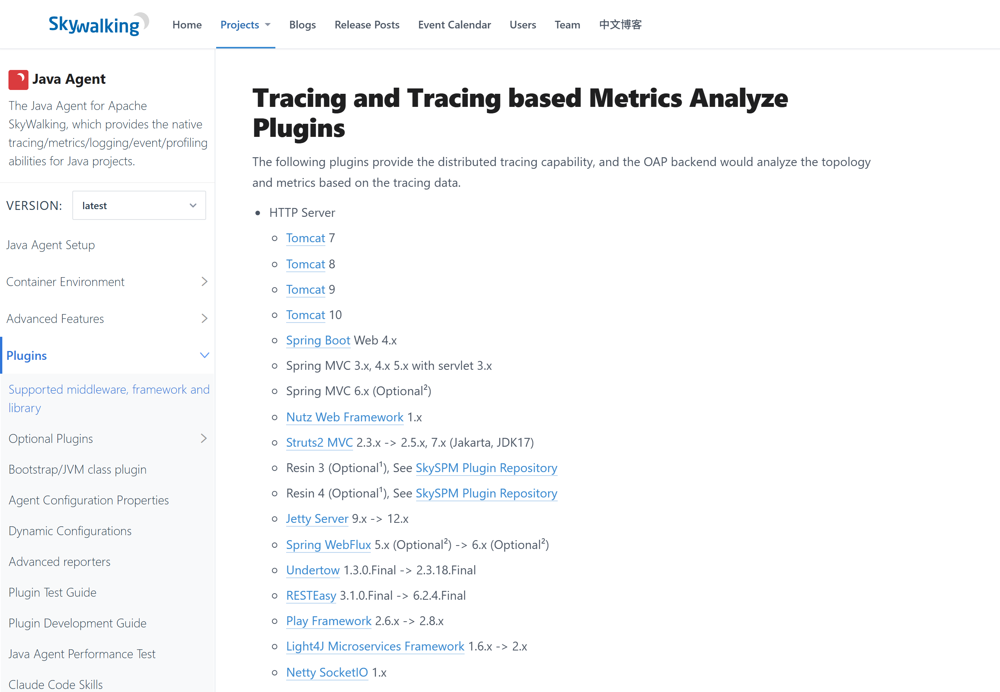
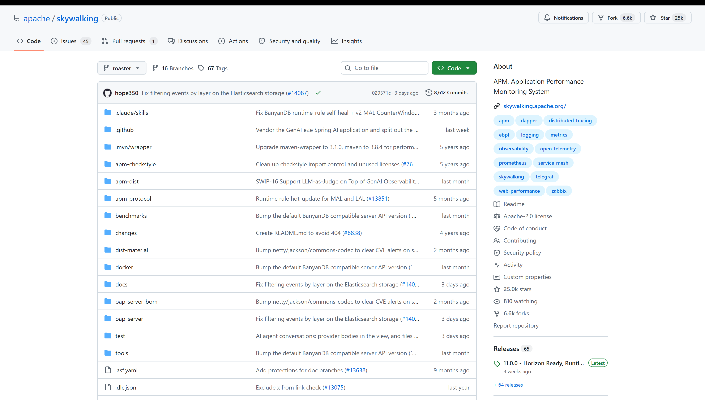

OSS PROJECT INTRO · SKYWALKING 系列第 1 期：认识项目
开源项目入门系列的每个新项目，都从三个问题开始：它解决什么痛点、凭什么活下来、什么场景该选它。今天开启新项目 SkyWalking——可观测版图里"调用链归 APM"那一栏，说的就是它。官方定义一句话：an open source observability platform…a modern APM, specially designed for cloud native, container based distributed systems，一个开源的可观测平台、面向云原生分布式系统的现代 APM。一句话心智模型：Java agent 字节码增强，应用一行代码不改，调用链自动上网。本期不装任何软件，素材全部来自官方文档与官方仓库，每张图都标出处；你带走四样东西："慢在哪一跳"的痛点、无侵入链路追踪这个心智模型、手动埋点与自动增强的本质差别，外加一份五方选型对比。
微服务排障有一句灵魂拷问：接口慢了，慢在哪一跳？一个下单请求从网关进来，路过订单、库存、支付、通知四五个服务，每个服务再调自己的数据库和中间件——任何一个环节抖一下，用户体验到的都是"同一个接口慢了"。没上链路追踪前，应答方式是三件套：翻日志、看监控、靠猜，很快撞上三堵墙：
解法是给每次请求发一张"全程通行证"：请求进入系统时生成唯一的追踪标识（Trace ID），跨服务传递，沿途每一跳都记录自己的一段路径（Span），最后把同一张通行证的记录拼起来——就是这次请求的完整调用链。这就是分布式链路追踪（Distributed Tracing）。它和另外两种可观测数据是分工关系，不是替代关系：
上一期 Prometheus 的选型清单里写过：数值型问题找它，明细型问题去日志与链路。今天的 SkyWalking，就是"链路"这一支柱的主力选手——而且它把三根支柱都装进了同一个平台。
官方文档的定义值得逐词读（skywalking.apache.org《Concepts and Designs · Overview》，v11.0.0，2026-09 核对）："SkyWalking is an open source observability platform used to collect, analyze, aggregate and visualize data from services and cloud native infrastructures. … It is a modern APM, specially designed for cloud native, container based distributed systems."——一个开源可观测平台，采集、分析、聚合、可视化服务与云原生基础设施的数据；是一个专门为云原生、容器化分布式系统设计的现代 APM。同页列出它覆盖的五类数据：Tracing（链路）、Metrics（指标）、Logging（日志）、Profiling（性能剖析）、Event（事件）。
一句话心智模型：无侵入的链路追踪 APM——Java agent 字节码增强，应用一行不改，调用链自动上网。"无侵入"是它最值钱的三个字，接入方式长这样（命令出自官方《Setup java agent》文档，2026-09 核对）：
# 官方《Setup java agent》：在 -jar 之前加 -javaagent 参数
java -javaagent:/path/to/skywalking-agent/skywalking-agent.jar \
-Dskywalking.agent.service_name=order-service \
-Dskywalking.collector.backend_service=oap-address:11800 \
-jar your-app.jar对，就这一行 JVM 参数。应用代码、框架配置、依赖版本全都不用动，启动后 Tomcat、Spring MVC、MySQL、Redis、Kafka 这些调用就自动被记录并上报。注意默认后端地址是 127.0.0.1:11800——agent 通过 gRPC 把数据发给 OAP 后端，11800 是它的接收端口。架构上官方把它拆成四个逻辑部分（同一份文档）：探针（Probes）负责采集，平台后端（OAP）负责聚合分析与流式处理，存储（Storage）可插拔——Elasticsearch、MySQL、自研 BanyanDB 等，UI 负责可视化。数据进来后，系统能自动画出服务拓扑图、算出各服务的吞吐与延迟、还能把日志和链路用同一枚 Trace ID 关联起来。第 3 期会逐个模块拆，今天先记分工。

官方文档《Overview》：开源可观测平台 + 现代 APM 的定位，与 Tracing/Metrics/Logging/Profiling/Event 五类数据清单（2026-09-19 截图）。链路追踪不是 SkyWalking 发明的，Google Dapper 论文（2010）之后各家公司都造过轮子。传统玩法是手动埋点：引入 SDK，在业务代码里手写"开一个 Span、塞上下文、结束 Span"，或者给 HTTP 客户端一个个注册拦截器。SkyWalking 换了一条路：Java agent 在类加载时改写字节码，把埋点逻辑织进 Tomcat、Spring、MySQL 驱动这些类的内部——你一行代码没写，埋点已经生效了。两条路线正面对比：
| 维度 | 手动埋点（SDK / 拦截器） | 自动增强（Java agent 字节码增强） |
|---|---|---|
| 代码侵入 | 业务代码里到处是追踪逻辑，忘记清理就是线上事故源 | 零侵入：应用代码、依赖、配置一行不改 |
| 覆盖范围 | 覆盖靠自觉：新框架、新中间件上线，埋点往往被遗漏 | 插件清单即覆盖清单：Java agent 官方支持列表 130+ 条目（v9.7.0 文档，2026-09 核对） |
| 升级成本 | 追踪 SDK 升级要回归测试整个应用 | 换 agent 包即可，业务应用无感；插件可按需启用/禁用 |
| 灵活度 | 想在任意业务逻辑里打标、加属性，随手就来 | 业务级自定义要靠注解（@Trace）或插件开发补——灵活性让渡给省心 |
| 适用 | 个别关键路径的深度定制 | 整个应用集群的默认开启 |
无侵入是怎么做到的？点到为止：JVM 提供了 java.lang.instrument 接口，允许 agent 在类加载进 JVM 之前拦截并改写字节码——SkyWalking 把"对 Tomcat 某方法的调用前后插入上报逻辑"这类改写规则做成一个个插件，类加载时命中规则就织入，命中不了原样放行。改的是字节码，不是你的代码。这套"agent + 插件模型"是它最值得读的设计，第 5 期源码导读专门拆。
SkyWalking 的生态围绕"采集 → 分析 → 存储 → 展示"四层展开（各组件角色为官方文档口径，2026-09 核对）：

Java agent 官方支持清单（节选）：仅 HTTP Server 一类就有 24 个条目，全清单 130+ 条目（2026-09-19 截图，v9.7.0 文档）。跟上一期的 Prometheus 什么关系？互补，不是替代：指标告警链路（Prometheus + Alertmanager + Grafana）照常运转，SkyWalking 补上"调用路径"这一层——它甚至能直接接收 Prometheus 格式的指标数据，把两套系统收拢进同一张拓扑图。日志那一线也一样：检索归 Elasticsearch 一族，但 SkyWalking 会用 Trace ID 给日志打标，让"看路径"和"看细节"一键互通。

apache/skywalking 仓库主页：About 自述 APM, Application Performance Monitoring System · Apache-2.0 license · Star 25.0k · Fork 6.6k · Releases 65，最新 11.0.0（2026-09-19 截图）。| 指标 | 数值 | 来源与口径 |
|---|---|---|
| GitHub Stars（主仓库） | 25.0k | apache/skywalking 仓库页，2026-09-19 核对 |
| GitHub Stars（全家桶） | 35.1K+ | 官网口径：SkyWalking 生态多仓库合计，另有 1,023 位贡献者 |
| Java agent 插件 | 130+ | 官方支持清单 133 条链路插件 + 26 条 metrics 插件（v9.7.0 文档，2026-09） |
| Apache 顶级项目 | 2019-04 毕业 | ASF 2019-04-24 官宣；2017-12 进入孵化器——中国首个个人主导的 Apache 顶级项目 |
| 生产验证 | 10+ 年 | 官网口径：10+ years in production，单集群每秒处理 100B+ 条遥测数据 |
| 开源许可 | Apache-2.0 | 仓库 license 栏，商用友好 |
版本基准（GitHub Releases，UTC，2026-09-19 核对）：
| 组件 | 当前版本 | 说明 |
|---|---|---|
| OAP 后端 / 主仓库 | v11.0.0（2026-08-28，Latest） | "Horizon Ready, Runtime Rule Hot-Update and Live DSL Debugger"——本系列全部口径锚定它 |
| Java agent | v9.7.0 | 官方文档索引 latest；与 OAP 版本线各自独立演进 |
| BanyanDB | 0.11.0 | 官方 quickstart 脚本配套版本；v10.3 起新版 trace 模型落库于此 |
| Horizon UI | 1.0.0 | v11 起成为主流 UI |
注意主仓库 25.0k 与官网 35.1K+ 两个星数并存：后者是 SkyWalking 全家桶（agent、BanyanDB、Rover 等多仓库）合计口径，引用时别混。
个人项目 → Apache 孵化器 → 顶级项目，这条路每一步都有明确日期可查。它说明两件事：治理上，社区足够中立健康（Apache 基金会背书，企业敢深度依赖）；功能上，十一年持续演进，从单一链路追踪长成指标、日志、剖析、事件全都要的平台——这也是为什么选型时它的"一体化"是最大的差异化。
链路追踪这条赛道玩家不少，各就各位（定位为各项目官方公开口径，2026-09 核对）：
| 方案 | 定位与技术路线 | 侵入性 | 生态与差异 |
|---|---|---|---|
| SkyWalking v11 | 一体化 APM：链路 + 指标 + 日志 + 剖析 + 拓扑，OAP 流式聚合，BanyanDB 自研存储 | Java agent 零侵入自动埋点为主 | Apache 顶级项目；Java 生态最深；中文文档友好；开源自建 |
| Zipkin | 链路追踪元老（Twitter 开源）：只管 trace 的采集存储查询 | SDK 手动埋点为主，侵入较多 | 轻量、组件小，存储/告警/指标要自己拼装 |
| Jaeger | Uber 开源、CNCF 托管的链路追踪系统，云原生阵营主力 | SDK/手动埋点为主 | Go 技术栈亲和；同样只管 trace，搭配 Prometheus 用 |
| OpenTelemetry（OTel） | 标准而非实现：统一 API/SDK/OTLP 协议，不含存储与 UI | 自动插桩覆盖多语言（Java/Go/Python…） | 厂商中立的采集标准；后端可换——SkyWalking 就是它的后端之一 |
| 商用 APM（Datadog 等） | 托管全家桶，开箱即用，产品化最完整 | Agent 自动安装 | 按量计费成本随规模涨，数据在第三方；不想养运维的省心选项 |
怎么选？Java 微服务为主、要无侵入 + 一张拓扑图管全部数据，SkyWalking 默认答案；已有 Zipkin 且没痛点，不必为迁移而迁移；Go/Python 主栈要自动插桩生态，OpenTelemetry 更顺——而且它不锁后端，SkyWalking/ Jaeger/商用方案都收 OTLP；不想养运维、预算充足，商用 APM 花钱买省心。没有全能冠军，只有场景匹配。
✅ 适合：
❌ 错配：
一条判断捷径，接着上一期的口径说：问"现在/过去一段时间系统表现如何"的数值型问题，找 Prometheus；问"某一笔请求经历了什么"的明细型问题，找 SkyWalking——它把"慢在哪一跳"从人工连线变成一眼看图。
每题点击选项立即反馈 · 共 4 题
1. 官方给 SkyWalking 的定位，哪句最准确？
2. SkyWalking 的"无侵入"，无侵入的到底是什么？
3. 指标、日志、链路三种数据，SkyWalking 最不可替代的是哪种能力？
4. 一个以 Go 为主的微服务团队想上自动插桩追踪，最顺的路线是？
先把机制说准。JVM 的 java.lang.instrument 接口允许 agent 在类加载的入口拿到字节码并返回修改后的版本——SkyWalking 的做法是把改写规则做成插件：类加载时按"类名 + 方法签名"匹配规则，命中就把"调用前后记录 Span、传递上下文"的指令织进去，未命中原样放行。所以它改的是字节码，不是你的源代码，应用仓库里连一行 diff 都不会有。收益侧：覆盖与改造解耦——130+ 插件等于一张现成的埋点清单，新应用接入成本从"人月"降到"一行启动参数"；升级追踪逻辑不用碰业务代码，对几十上百个服务的组织来说是数量级的收益。风险侧也真实存在：其一，agent 与第三方库版本强相关，框架升级可能踩插件兼容坑，所以官方清单里每个插件都标着适用版本区间；其二，织入发生在类加载期，agent 自身的 bug 会直接表现为应用异常——这正是 SkyWalking 把插件做成可按需启停、并在第 5 期要读的"插件隔离与字节码守卫"设计的原因；其三，每个请求多了一次记录与（通常是异步的）上报，开销换可观测性，官方一直在做性能优化并允许 metrics-only 模式。为什么大家都选它？因为链路追踪要"全"，手动埋点天生凑不齐覆盖率——漏埋的那一段恰恰最可能是没被关注、最容易出事的一段。无侵入把"要不要埋点"从每个团队的工程决策，变成了平台的一次性决策，这是 Java 生态里 APM 产品的共同底座。
把三种数据的形状摆在一起看。指标是预聚合的数值时序：便宜、可长期留存、能画曲线和触发告警，但聚合不可逆——从"订单服务 P99 涨了 3 倍"无法还原出"哪一笔请求、卡在哪一步"。日志是离散的文本事件：信息密度最高、离根因最近，但同一笔请求的日志散落在十几个服务里，没有"路径"概念。链路是结构化的路径明细：每一笔请求记录完整调用树（哪个服务、哪个方法、耗时多少、谁是谁的父调用），天然回答"慢在哪一跳"。排障动线因此是三段式：指标发现异常（什么时候、什么症状）→ 链路定位到跳（哪条路径、哪一跳慢）→ 日志看清根因（那一跳里到底抛了什么）。三段之间靠同一枚 Trace ID 串联——SkyWalking 甚至自动把 Trace ID 写进应用日志，第三段就不用人工对时间线了。链路为什么贵？因为它是逐请求的全量明细：QPS 一万、每笔请求二十跳，就是每秒二十万条记录，存储与计算成本远超预聚合的指标。贵得有道理在于：指标的聚合丢了明细，日志的离散丢了结构，只有链路同时保住了"逐笔"和"结构化"两个性质——它是唯一能回答"这一笔怎么了"的数据。工程上的平衡术也围绕这一点展开：采样率控制、头部采样与尾部采样取舍、把高频低价值数据降级为指标……这些取舍正是第 3、4 期的主线。
带走这五句话：
下期预告：第 2 期《5 分钟跑起来》——照官方 quickstart 一条命令拉起 OAP + BanyanDB + UI，挂上 agent 跑通第一个应用，在拓扑图里亲眼看到调用链上网，命令与预期输出逐条对照官方文档。
Primary source：SkyWalking 官方文档 · Concepts and Designs · Overview——本期定义、四层架构与五类数据均出自该文档（与 v11 匹配）；Java agent 接入见 Setup java agent，插件清单见 supported list，版本与发布记录见 GitHub Releases。